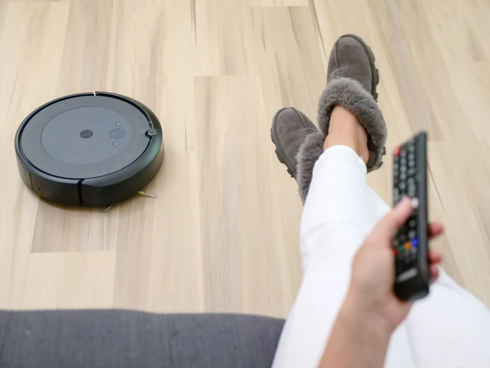
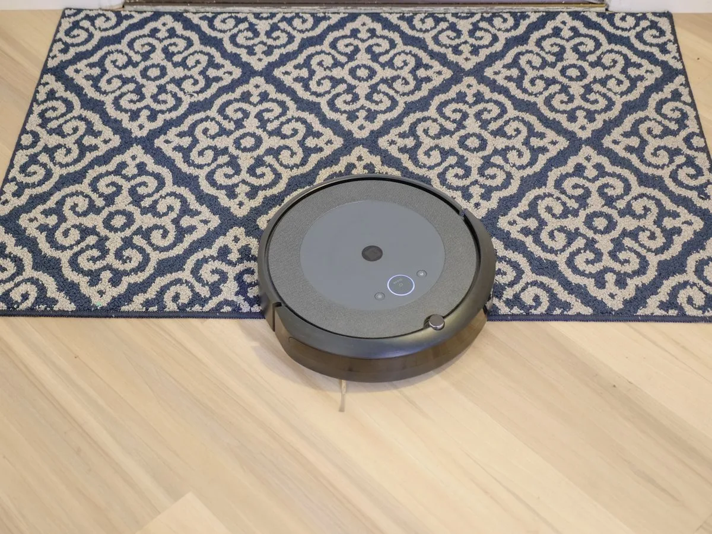

Robot Vacuum and Mop, Tested in a Real Home: What to Check Before You Buy
The short answer
Buy a robot vacuum and mop for the floors you actually have, not the spec sheet. Check three things before you buy: whether it gets over your thresholds, whether it picks up pet hair without tangling, and whether the mop actually touches the floor. A self-empty dock is worth it only if you hate emptying the bin. The two models below are the ones our research scored highest.
Our pick: eufy C30 robot vacuum + mop — the strongest robot mop signal in our research: robot mop searches were up sharply in the November 2026 Holiday 100 data.
Check price on AmazonAffiliate link to be added after approval. No price shown here — check it on Amazon.

We may earn a commission if you buy through links on this page. As an Amazon Associate I earn from qualifying purchases.
What you need
Two robot vacuum and mop models verified in our research.
eufy C30 robot vacuum + mop
The strongest robot mop signal in our research — robot mop searches were up sharply in the November 2026 Holiday 100 data.
Watch out: Check the dustbin size and how often the mop pad needs washing. A mop that is never cleaned just moves dirt around.
Check price on AmazonAffiliate link to be added after approval. No price shown here — check it on Amazon.
Roborock Q10 S5+ robot vacuum + mop
A mid-priced robot vacuum and mop in our research, in the range where most buyers actually shop.
Watch out: Check whether the self-empty dock is included in the version you buy — listings vary, and the dock is often a separate version.
Check price on AmazonAffiliate link to be added after approval. No price shown here — check it on Amazon.
How to test one in a real home
- Run it over your thresholds first. The number one real-home failure is a robot that cannot get from one room to the next. Watch the first run.
- Check the pet hair test. If you have a pet, run it after a normal day, then check the brush roll. Tangled hair means daily cleaning for you.
- Look at the mop, not the marketing. Lift the mop pad after a run. If it is dry in the middle, it was not touching the floor.
- Listen to it while you work. A robot you run while working from home needs to be quiet enough to ignore. Run it during a call and find out.


Photos still needed
Photos are now in place for the hero, the work-while-it-runs step and the carpet step (see Photo credits). Still missing — needs real at-home photos:
- The robot crossing a door threshold
- The brush roll after a run in a home with a pet
- The mop pad after a run, lifted to show contact
- The dock and bin, showing how it empties
Comparison
| Model | Best for | What to check before you buy | Watch out for |
|---|---|---|---|
| eufy C30 | Robot mopping demand right now | Mop pad washing, dustbin size | A dirty mop pad moves dirt around |
| Roborock Q10 S5+ | Mid-price robot vacuum + mop | Whether the self-empty dock is included | Listings vary by version — check the variant |
Troubleshooting
It gets stuck under the sofa
Measure the clearance first. Most robots need more height than their spec suggests once a rug is involved. Block the gap or raise the furniture.
The mop leaves streaks
Wash or replace the mop pad, and check the water tank is actually full. A streaky mop is usually a dirty pad, not a broken robot.
It misses the same corner every time
Check the map in the app — a misread wall or a moved chair can leave a permanent blind spot. Delete the map and let it re-map the room.
Frequently asked questions
Does a robot mop replace mopping by hand?
No. It keeps a floor clean between real mops. If the floor is properly dirty, a robot mop will not fix it — mop by hand first, then let the robot maintain it.
Is a self-empty dock worth it?
Only if emptying the bin is the part you hate. The dock costs more and needs its own bags. If you empty the bin happily, skip it.
Sources
- HomeTryout affiliate business opportunity report, 9 Nov 2026 — product scores (product-scores.csv).
- Google Holiday 100, 9 Nov 2026 — robot mop searches up 80% (reported in the opportunity report).